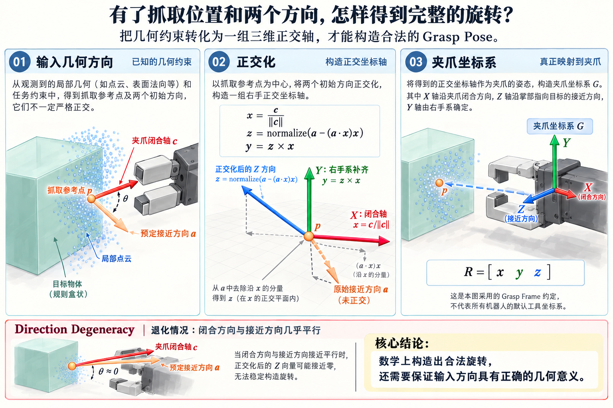
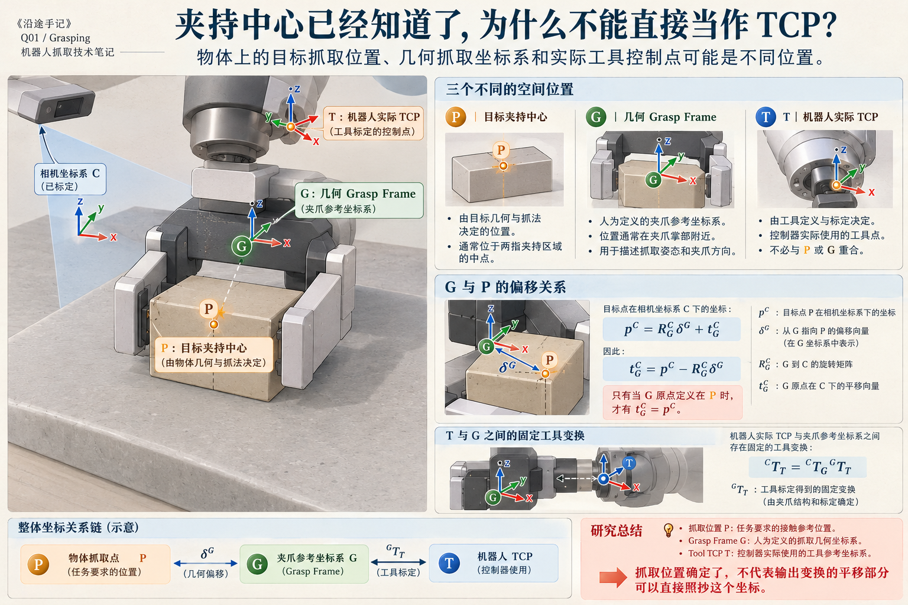
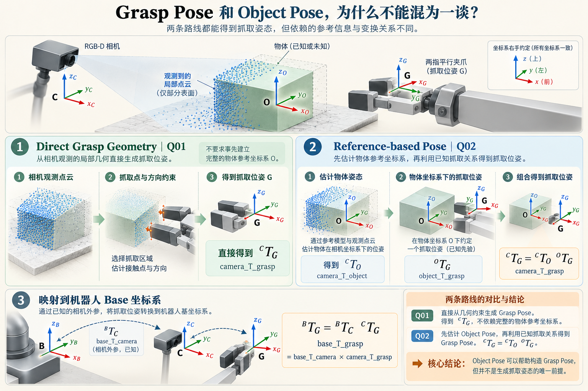

1994
Murray, Li & Sastry · A Mathematical Introduction to Robotic Manipulation
SE(3) / 运动学经典教材
以规范的刚体运动、旋转和坐标变换语言组织机器人运动学，是理解变换方向和运动群的经典教材资源。
获得的能力把位姿与坐标变换用统一的数学对象表达。
代价与边界学习数学表达不等于自动得到抓取约束，R、t 的来源仍需几何与任务条件。
把中心、主轴、法线和接触候选组织成明确的夹爪坐标系。这里重点整理正交旋转、TCP 偏移、变换方向与几何退化，而不是把数学上可表示的 Pose 误认为已经保证能抓。
Center 给了位置参考，Orientation 给了统计或结构方向，Local Surface 给了法线，Contact 给了潜在夹持区域。最后要输出的是带有明确坐标系定义的刚体变换，而不是把几根向量拼在一起。
夹爪参考坐标系原点在相机坐标系 C 中的位置。
由三个单位正交轴组成，满足右手系与 det(R)=+1。
camera_T_grasp 把 Grasp Frame 中坐标表示为 Camera Frame。
数学简写：上标 C 表示相机坐标系，下标 G 表示夹爪参考系；不是所有厂商的 Tool Frame 都采用相同的轴定义。
约定示例：夹爪 G 的 +X 沿闭合轴某一有向取向，+Z 为掌心指向目标的接近方向，+Y 由右手系补齐；其他机器人可能采取不同的 TCP 轴约定，使用前必须做固定变换。
和前面几篇不同，这里不需要为了凑“算法发展史”强行列出 Pose 生成的发明年份。更有价值的是保留刚体运动数学、坐标系约定与数值旋转实现这三类可追溯资料。
以规范的刚体运动、旋转和坐标变换语言组织机器人运动学，是理解变换方向和运动群的经典教材资源。
规定 ROS 的单位、右手系与常用轴向；尤其要区分机体坐标系与相机 optical frame。
系统介绍 SO(3)、SE(3)、变换连乘和坐标系语义，适合作为 Pose 构造与验证的数学参考。
假设已经得到相机坐标系中的有向闭合轴 c与预定接近方向 a。它们可能并不严格垂直，因此不应直接归一化后塞进旋转矩阵。
这是一种简洁的 Gram–Schmidt 式构造：先确定闭合轴，再从接近方向中去除沿闭合轴的分量，最后由右手系补齐 Y。这里列向量 x、y、z 都表示在相机坐标系中的夹爪 G 轴。
必要条件：c 必须非零；接近方向 a 不能与 c 近似平行，否则去投影之后几乎是零向量，无法稳定定义 z。构造完成后检查 R.T @ R ≈ I 和 det(R) ≈ 1。
images/q01-pose-construction-fig-01-gripper-frame-from-directions.png
如果几何只能确定一根轴，仍然需要选择绕轴旋转的角度；如果初始方向来自不可靠点云，数值上精确正交也不会让物理判断变正确。
最容易混淆的是三个不同的点：物体上的期望抓取中心、我们人为定义的几何 Grasp Frame 原点，以及机器人控制器实际使用的 TCP。只有它们按约定重合时，才可以直接用抓取中心作为输出平移。
其中 δᴳ 是从 G 原点指向目标抓取参考点的向量，以 G 坐标表达。若 G 原点就定义在抓取中心，δ=0；若机器人 TCP 在夹爪掌部或指根，则不能随意令 t=p。
images/q01-pose-construction-fig-02-grasp-frame-tcp-offset.png
如果现在有一个已知物体参考系 O，且抓取姿态在 O 中给出，则可以通过变换连乘映射回相机系。对于直接几何抓取，没有 O 也可以直接构造 C_T_G；两种做法不是同一个流水线。
4×4 刚体变换的乘法有方向语义，一般不满足交换律。对于手眼场景，还应检查相机固定在机器人哪里、外参随哪个关节变化，以及 Frame ID 是否是 optical frame。
输出 camera_T_grasp，不需要事先定义实例级物体参考坐标系。
使用 camera_T_object × object_T_grasp，适合 Q02 类型已知参考方案。
需要 base_T_camera，必须由真实标定与 TF 关系支持，不应凭空猜测。
images/q01-pose-construction-fig-03-grasp-pose-transform-chains.png
还要检查每个坐标系的 Frame ID、轴定义、单位、乘法方向，以及输出原点是不是控制器真正执行的 TCP。
即使程序可以构造出 R，也应该判断输入约束是否足以排除歧义。
| 情况 | 问题本质 | 合理处理 |
|---|---|---|
| 接近方向与闭合轴近似平行 | 正交化退化，旋转矩阵不稳定 | 拒绝候选或重新选取独立方向 |
| 仅观察到理想圆柱轴线 | 绕轴角度不由结构唯一决定 | 结合接近任务产生多个绕轴候选 |
| 局部平面只给法线 | 平面内旋转尚未确定 | 结合边界、夹爪开口和碰撞约束 |
| 可见点云稀疏、背侧不明 | 接触与自由空间缺少证据 | 降低可信评分或交给后续验证 |
| 存在多种等价抓法 | 目标几何或任务具有对称性 | 保留等价候选并选择可执行的一组 |
这段代码实现了两条有向方向约束的正交化、输入退化检查、右手系校验与四元数输出。方向和抓取参考点的来源需要由 Q01 前几篇模块提供。
import numpy as np
from scipy.spatial.transform import Rotation
def make_grasp_pose(center_C, closing_C, approach_C,
grasp_point_offset_G=(0.0, 0.0, 0.0)):
p = np.asarray(center_C, dtype=float)
c = np.asarray(closing_C, dtype=float)
a = np.asarray(approach_C, dtype=float)
delta = np.asarray(grasp_point_offset_G, dtype=float)
if any(v.shape != (3,) or not np.isfinite(v).all()
for v in (p, c, a, delta)):
raise ValueError("vectors must be finite 3D vectors")
if np.linalg.norm(c) < 1e-8:
raise ValueError("closing direction is zero")
x = c / np.linalg.norm(c)
z = a - np.dot(a, x) * x
if np.linalg.norm(z) < 1e-6:
raise ValueError("closing and approach are nearly parallel")
z /= np.linalg.norm(z)
y = np.cross(z, x)
R = np.column_stack((x, y, z))
if not (np.allclose(R.T @ R, np.eye(3), atol=1e-6)
and np.linalg.det(R) > 0.999):
raise ValueError("invalid rotation")
t = p - R @ delta
T = np.eye(4)
T[:3, :3] = R
T[:3, 3] = t
q_xyzw = Rotation.from_matrix(R).as_quat()
return T, q_xyzw
# 注意：+Z 为本页定义的接近方向，而非通用工业 TCP 惯例。这一篇的重点是严格的坐标语义。使用经典教材和规范比为了完整的“算法年表”列一长串不相干模型更有意义。
Grasp Pose 不是把中心、法线与主轴随便拼成 6 个数；它必须是以明确的坐标系和 TCP 定义为基础、具有物理意义的刚体变换。
几何信息可能只提供部分约束；完整姿态必须补足剩余方向，并清楚标明这些方向来自测量、假设还是任务选择。